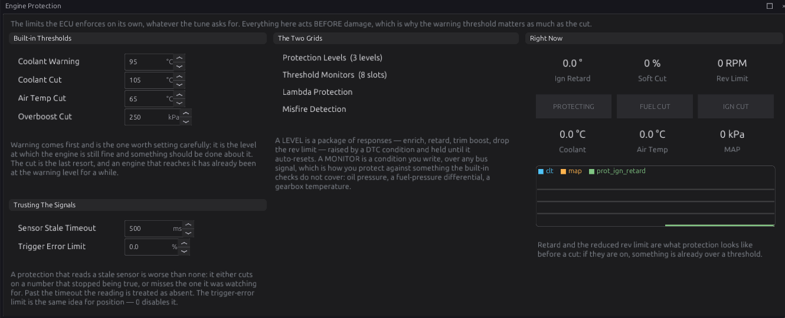
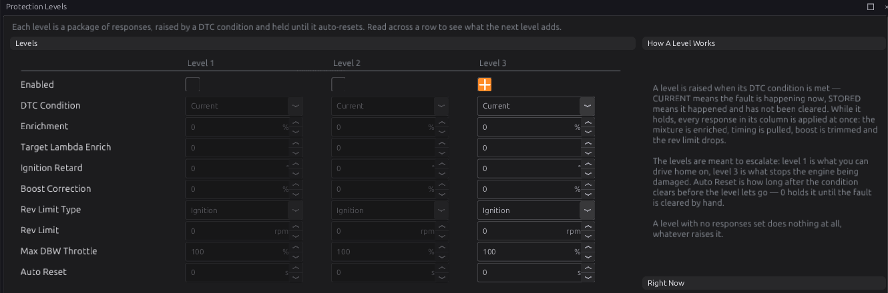
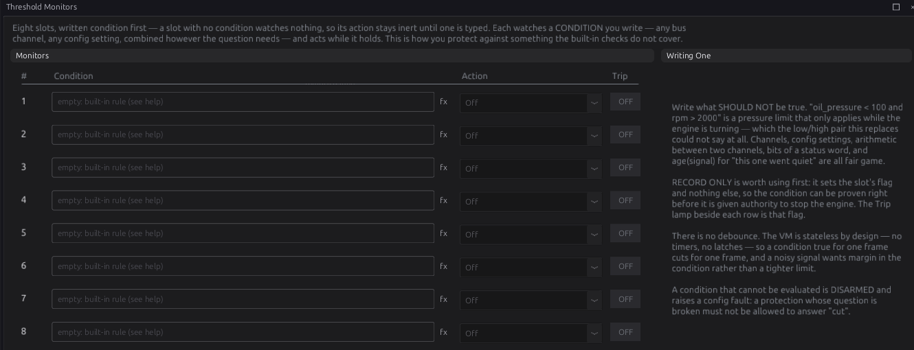
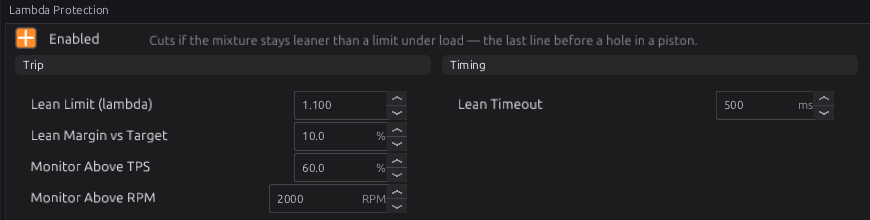
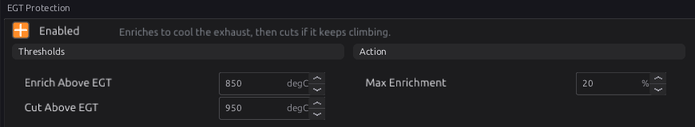
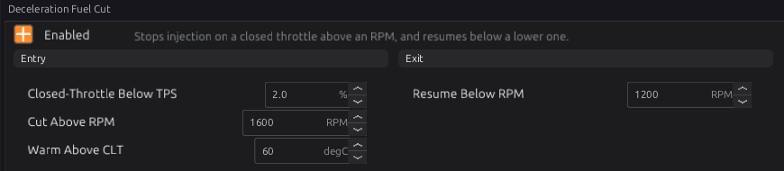

Engine protection¶
Intermediate → Advanced
In one sentence: the ECU watches for faults — sensors that have died, an engine running too hot, too much boost, a lean mixture, a hot exhaust — records each as a trouble code, and reacts by the severity of the worst one: enriching, retarding, trimming boost, lowering the rev limit, or cutting.
What it does¶
Basic
Protection is built from a few parts:
- Trouble codes (DTCs). Every fault the ECU detects — in a sensor, a module, the trigger, or the checks below — is recorded as a code with a severity: 1 (warning), 2 or 3 (most serious).
- Protection levels. Three packages of reactions, one per severity. The worst active code picks which level acts. All three are off by default: until you enable them, a fault is recorded but the engine is not protected by them.
- Built-in checks in Engine Protection: dead sensors, coolant and intake overheat, overboost.
- Threshold monitors. Eight conditions you write yourself, each able to cut fuel or ignition.
- Lambda Protection, EGT Protection and Deceleration Fuel Cut — separate modules that act directly.
Enable the protection levels
A new tune records faults but does not react to them (apart from the trigger sync-loss cut and the modules that cut on their own). Set up at least Level 3 before driving hard.
How it works¶
Intermediate
1 · The built-in checks¶
| Check | Code | Severity | Default |
|---|---|---|---|
| Coolant sensor not updating | P0117 | 2 | older than Sensor Stale Timeout (500 ms) |
| MAP sensor not updating | P0107 | 2 | 〃 |
| Throttle sensor not updating | P0122 | 2 | 〃 |
| Lambda sensor not updating | P0131 | 1 | 〃 |
| Battery voltage not updating | P0560 | 1 | 〃 |
| Coolant warning | P1217 | 1 | CLT Warning Threshold 95 °C |
| Coolant over-temperature | P0217 | 3 | CLT Cut Threshold 105 °C |
| Intake air over-temperature | P1098 | 3 | IAT Cut Threshold 65 °C |
| Overboost | P0234 | 3 | Overboost Cut 250 kPa (absolute) |
A sensor that is not enabled cannot time out. A value check only runs while that sensor is up to date. The trigger checks (P0335–P0339, P0341) are in chapter 16; a loss of sync while running always cuts fuel and spark, whatever the levels say. Sensors also raise their own codes (chapter 17), and modules theirs; all of them feed the same levels.

2 · Protection levels¶
Each level has these reactions, applied together while it is in charge:
| Setting | Does |
|---|---|
| Enable | the level acts at all |
| DTC Condition | Current: faults happening now; Stored: also faults that happened and have not been cleared |
| Enrichment | adds this percentage of fuel |
| Ignition Retard | takes this many degrees of timing |
| Boost Correction | takes this share of the boost away (−50 % halves it) |
| Rev Limit / Rev Limit Type | a lower rev limit, cutting ignition or fuel. It applies even with the Rev Limiter switched off (chapter 27) |
| Auto Reset | seconds after the fault clears before the level lets go. 0 = it holds until the key is turned off or the codes are cleared |
Only the worst level in charge acts, not a sum of them. Plan them to escalate: level 1 you can drive home on, level 3 stops damage.

3 · Threshold monitors¶
Eight slots, each a Condition (an expression, chapter 34) and an Action: Off, Record Only
(sets its flag in monitor_flags only), Cut Fuel, Cut Ignition or Cut Both. The action
lasts exactly as long as the condition is true — there is no delay — so leave margin for a noisy
signal. A channel that is not reading counts as false, so a dead sensor cannot trip a cut.
A condition that does not compile against this firmware is disarmed and sets P17C0. Monitors are checked again whenever the tune changes, so a condition you type while the engine runs is checked before it is used.
Examples: oil_pressure < 100 and rpm > 2000 (oil pressure while running), fuel_pressure < 250,
age(oil_pressure) > 1000 (the oil pressure sensor has gone quiet).

4 · Lambda protection¶
Cuts fuel when the mixture is lean under load:
- Watched only while throttle is above Monitor Above TPS (60 %) and speed above Monitor Above RPM (2000).
- Lean means leaner than Lean Limit (λ 1.100) or more than Lean Margin vs Target (10 %) leaner than Target Lambda. It reads the widebands with the jobs Overall, Bank 1 and Bank 2 (chapter 23), and takes the leanest.
- Lean for Lean Timeout (500 ms) → fuel cut, held until you lift (throttle or speed drops out of the window).

5 · EGT protection¶
Watches the hottest exhaust temperature probe:
- Above Enrich Above EGT (850 °C) it adds fuel, rising in a straight line to Max Enrichment (20 %) at Cut Above EGT (950 °C).
- At Cut Above EGT it cuts fuel and sets the code for that probe (P1770 for probe 1 … P177B for probe 12, severity 3). The cut ends when the hottest probe falls back below Enrich Above EGT.

6 · Deceleration fuel cut¶
Stops fuel on a closed-throttle overrun, which saves fuel and stops the exhaust popping:
- Cuts when the throttle is below Closed-Throttle Below TPS (2 %), the coolant is above Warm Above CLT (60 °C), and engine speed rises above Cut Above RPM (1600).
- Fuel returns below Resume Below RPM (1200), or as soon as the throttle opens.
dfco_active tells other modules the engine is not making power (the knock noise learner pauses on
it, chapter 30), and closed-loop lambda holds its trim during any fuel cut (chapter 23).

Before you start¶
Basic
- Your sensors set up and reading correctly (chapter 17). A protection that reads a wrong sensor is worse than none.
- A wideband for lambda protection (chapter 23); EGT probes for EGT protection (chapter 17).
Setting it up¶
Intermediate
- Built-in thresholds: on Engine Protection, set the coolant warning and cut, intake cut and overboost for your engine.
- Levels: on Protection Levels, enable Level 3 first: for example Rev Limit 3000 RPM (fuel), Boost Correction −100 %, Ignition Retard 5°. Then Level 2 (a milder limp) and Level 1 (a warning, or a small retard).
- Monitors: add conditions for what the built-in checks do not cover (oil pressure, fuel pressure). Start each as Record Only, drive, and check the flag behaves before giving it a cut.
- Lambda and EGT protection: enable, and set limits a little beyond your normal worst case.
- DFCO: enable for a road car; check the engine does not stall when you lift at low speed (raise Resume Below RPM if it does).
Worked examples¶
Intermediate
Example 1 — a street turbo car
- Level 3: Enable, Current, Rev Limit 3500 fuel, Boost Correction −100 %, Retard 5°, Auto Reset 0.
- Level 2: Enable, Current, Boost Correction −50 %, Retard 3°, Auto Reset 10 s.
- Level 1: Enable, Current, nothing else set (a record only).
- Monitor 1:
oil_pressure < 150 and rpm > 2500, Cut Fuel. - Lambda Protection on: λ 1.05 limit, 8 % margin, 400 ms.
Example 2 — a track car with EGT probes
EGT Protection on with Enrich Above 880 °C, Cut Above 960 °C, Max Enrichment 15 %; a probe per cylinder, so the code names the hot cylinder.
Tuning it¶
Advanced
- Test every reaction on purpose: unplug a sensor (level 2), lower a threshold to trip it at idle
(level 3), and watch Protection Status
prot_status,prot_ign_retardand the dash. - Keep monitors free of noise: add margin rather than tightening a limit.
- Use Stored on level 3 if an overheat should keep the engine in limp until someone has looked at it.
Diagnostics¶
Intermediate
The codes are in section 1 (built-in checks), section 5 (P1770–P177B) and section 3 (P17C0). Live
channels: Protection Level prot_level (0 none, or the level in force, held levels included),
prot_status (bit 0 cutting, bit 1 a level ≥1 active, bit 2 level 3 active),
prot_ign_retard, fuel_corr_protection, monitor_flags, lambda_protect_active,
egt_protect_active, fuel_corr_egt, dfco_active. The trouble codes themselves, and how to read
and clear them, are in chapter 44.
The Diagnostic Trouble Codes dock shows the level in force beside the code counts, "Protection level 2 in force", and keeps showing it after the codes that set it have cleared, for as long as the level holds. A Check Engine Light output (chapter 18) is on for any current code or level 3, and flashes a level that is still holding after its codes cleared: slowly for level 1, fast for level 2.
Troubleshooting¶
Basic → Advanced
| Symptom | Likely causes | Check |
|---|---|---|
| A code is set but nothing happens | Its level is not enabled, or has no reactions set | Protection Levels |
| Limp mode never lets go | Auto Reset 0, or DTC Condition Stored | Clear the codes; set Auto Reset |
| Engine cuts under load for no clear reason | Lambda protection on a lean spike; a monitor too tight | lambda_protect_active; monitor_flags |
| P0117 / P0107 / P0122 with the sensor reading fine | Sensor Stale Timeout shorter than the sensor's update | Raise the timeout |
| P17C0 | A monitor condition does not compile | Rewrite it on Threshold Monitors |
| Stalls on lift-off at low speed | DFCO resume too low | Raise Resume Below RPM |
Settings reference¶
Engine Protection:
| Setting | What it does |
|---|---|
Sensor Stale Timeoutengine_protection.sensor_timeout_msRange: 100 to 5000 Default: 500 Units: ms |
How old a signal may be before it is treated as stale. It applies to the protection checks and the threshold monitors: a monitor whose signal has gone quiet is SKIPPED rather than tripped, so a dead sensor does not itself become a cut. |
CLT Warning Thresholdengine_protection.clt_warn_cRange: 50 to 120 Default: 95 Units: C |
Coolant temperature that raises a warning. It does not cut — it is the code that appears while there is still time to lift, which is the point of having it separate from the cut threshold. |
CLT Cut Thresholdengine_protection.clt_cut_cRange: 60 to 130 Default: 105 Units: C |
Coolant temperature that raises a level 3 fault. Set from what the engine and its cooling system can actually survive, with enough margin below it for the warning to be useful. |
IAT Cut Thresholdengine_protection.iat_cut_cRange: 30 to 100 Default: 65 Units: C |
Intake air temperature that raises a level 3 fault. Very hot intake air is a knock risk before it is anything else, so this is a protection against detonation as much as against heat. |
Overboost Cut Thresholdengine_protection.map_cut_kpaRange: 100 to 500 Default: 250 Units: kPa |
Manifold pressure that raises an overboost fault. This is the DTC path — the reaction it causes depends on the protection level configured for its severity. Boost control has its own separate hard cut as a last resort. |
Trigger Error % Limitengine_protection.trigger_error_pct_limitRange: 0.0 to 100.0 Default: 0.0 Units: % |
Noise tolerance for trigger errors, as a percentage of teeth per revolution. 0 — the default — records ANY single tolerated tooth miss, which is the strictest and most informative setting: a miss the decoder rode through must not be silently forgotten. Raising it ignores up to that error rate before recording, which is for a genuinely noisy installation rather than a way to quieten a bad wheel. |
Lambda Protection:
| Setting | What it does |
|---|---|
Lambda Protection Enabledlambda_protect.enabledRange: Off or On Default: Off |
Cut fuel if the engine stays lean under load — the last line against a fuel-supply failure at high load, where a lean mixture destroys pistons in seconds. It only monitors inside the RPM and throttle window; outside it (a lift, or idle) the latch releases on its own. |
Lean Limit (lambda)lambda_protect.max_lambdaRange: 0.800 to 2.000 Default: 1.100 |
Cut if measured lambda exceeds this (leaner) under load, whatever the target. Every wideband holding a job (Overall, Bank 1, Bank 2) is watched and the leanest counts. |
Monitor Above TPSlambda_protect.min_tpsRange: 0.0 to 100.0 Default: 60.0 Units: % |
Only monitor above this load (lean sensing is meaningless off-throttle). |
Monitor Above RPMlambda_protect.min_rpmRange: 0 to 12000 Default: 2000 Units: RPM |
Only monitor above this RPM. Together with the throttle floor it defines "under load", which is the only condition where a lean reading means danger — a lean idle or an overrun is normal and must not trip this. |
Lean Timeoutlambda_protect.timeout_msRange: 0 to 5000 Default: 500 Units: ms |
How long lean-under-load is tolerated before the cut. |
Lean Margin vs Targetlambda_protect.lean_margin_pctRange: 0.0 to 50.0 Default: 10.0 Units: % |
Also cut when measured lambda is this much LEANER THAN THE TARGET — 10 % means 0.78 target, 0.86 measured. The fixed Lean Limit alone cannot protect a boosted engine: at a 0.78 target a reading of 1.05 is dangerously lean and still under 1.10. 0 = judge by the fixed limit only. |
EGT Protection:
| Setting | What it does |
|---|---|
EGT Protect Enabledegt_protect.enabledRange: Off or On Default: Off |
Watch exhaust gas temperature and act on it: enrich progressively from Enrich Above, then cut fuel at Cut Above. It protects on the HOTTEST assigned probe, whichever cylinder that is, and names that probe in the DTC it raises — so a stored code points at a cylinder instead of leaving twelve to guess. |
Enrich Above EGTegt_protect.enrich_cRange: 0 to 1200 Default: 850 Units: degC |
EGT where protective enrichment begins. |
Cut Above EGTegt_protect.cut_cRange: 0 to 1300 Default: 950 Units: degC |
EGT where a hard fuel cut engages (also full enrichment). |
Max Enrichmentegt_protect.max_enrich_pctRange: 0 to 100 Default: 20 Units: % |
Enrichment added at cut_c (ramps linearly from enrich_c). |
Deceleration Fuel Cut:
| Setting | What it does |
|---|---|
DFCO (Overrun Cut) Enableddfco.enabledRange: Off or On Default: Off |
Deceleration Fuel Cut-Off: stop injecting on a closed throttle overrun and resume before the engine loads up again. Off, the module publishes nothing at all and leaves the fuel cut entirely to whoever else claims it. On, it also becomes the signal other modules read as "the engine is not making power" — the knock floor learner, for one, refuses to learn while it is cutting. |
Closed-Throttle Below TPSdfco.max_tpsRange: 0.0 to 100.0 Default: 2.0 Units: % |
Cut only when TPS is below this (throttle closed). |
Warm Above CLTdfco.min_cltRange: -40 to 150 Default: 60 Units: degC |
Cut only when coolant is above this (never on a cold engine). |
Cut Above RPMdfco.rpm_highRange: 0 to 12000 Default: 1600 Units: RPM |
Enter overrun cut above this RPM. |
Resume Below RPMdfco.rpm_lowRange: 0 to 12000 Default: 1200 Units: RPM |
Resume fuel below this RPM (hysteresis vs rpm_high). |
Related¶
- Chapter 16 — Trigger (trigger codes)
- Chapter 17 — Sensors (sensor codes)
- Chapter 23 — Closed-loop lambda
- Chapter 27 — Speed limiting (the rev limiter)
- Chapter 34 — Generic tables and expressions (monitor conditions)
- Chapter 44 — Diagnostics and trouble codes